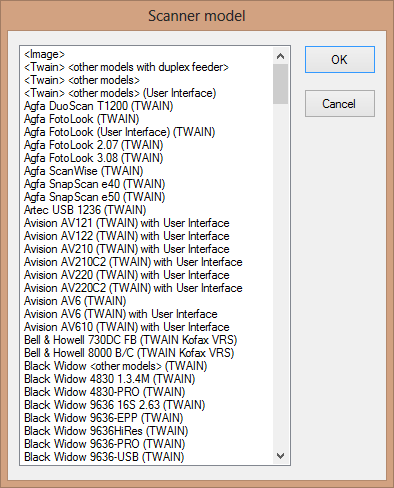
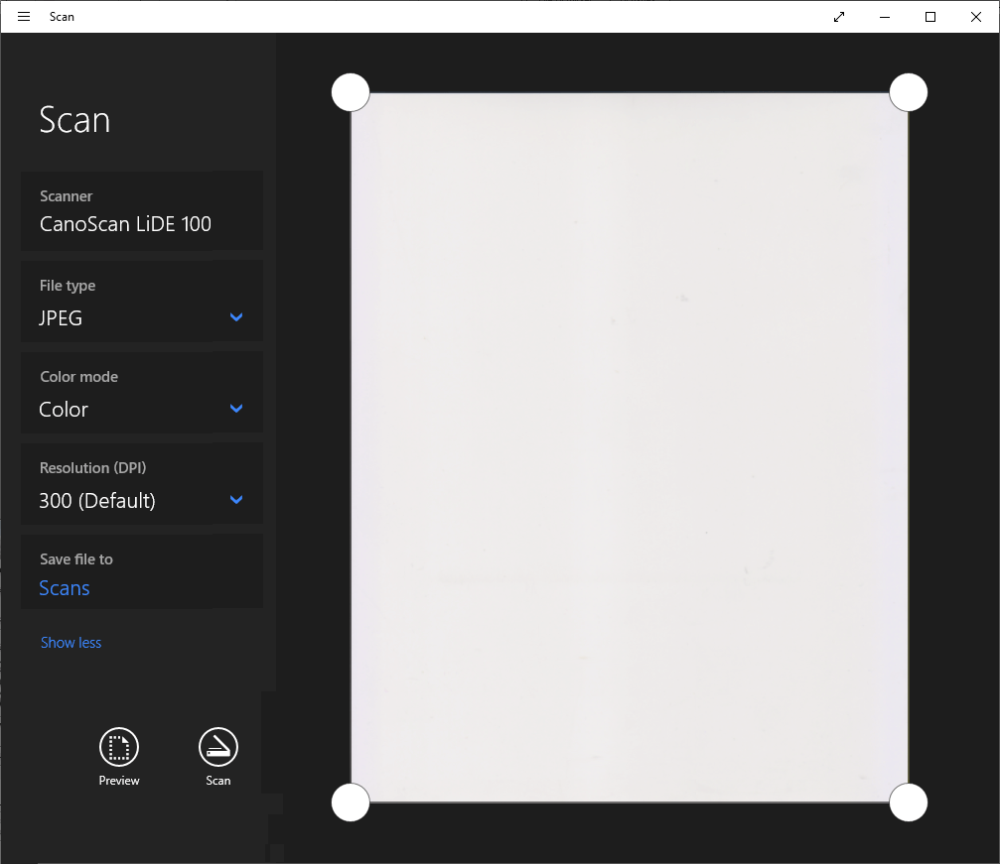

Tweet
Tweet
The major OCR packages support a wide range of scanners. That’s possible because the scanner manufacturers standardized the interfacing between any software and the hardware.
Twain scanner drivers are the leading industry-wide standard (on both the Windows and macOS platform); Twain is an international communication protocol jointly used by the scanner manufacturers and software developers.
Not to mention that the OS may allow you to scan. On macOS, the built-in application “Image Capture” digitizes documents for you! So does the app “Preview” for that matter…
You may not believe this but Twain originally meant “Technology without an interesting name”. Or you are familiar with the phrase “East is East, and West is West, and never the twain shall meet”, originally a line from a Rudyard Kipling poem. (The Twain consortium now claims that’s where they found the name...) Well, in this case, the twain did meet: the Twain standard is very successful and every serious scanner and scanning software supports it!
Any Twain-based application — OCR software, image editors such as Photoshop, scanning software such as Canon MP Navigator etc. — supports any Twain compliant device. (That does not mean that every capability of the Twain standard is supported by every Twain scanner: one scanner may be equipped with a document feeder (“ADF”) while another may not, one scanner may be limited to a 300 dpi resolution, while another offers more image detail etc. But as long as each model uses the same language to communicate with the software, things work out fine.)

A less popular scanner standard is ISIS, an alternative that supports a number of (mostly high-speed) scanners that are also supported by Twain. But overall, ISIS supports much less models!
Your scanner and OCR software may also support the Microsoft scanning architecture WIA, short for “Windows Image Acquisition”. Your digital camera in all probability does too!
In any case, support of scanners is so wide these days that Windows 10 comes with a free, standard scanning app, Windows Scan. Don’t bother looking for scanner drivers: just plug in your scanner and it’ll probably work…
